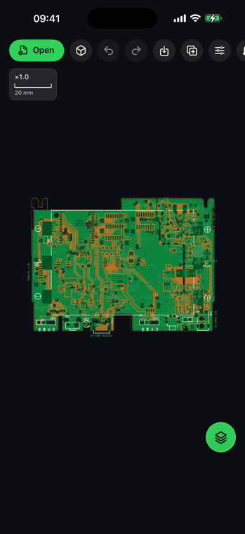
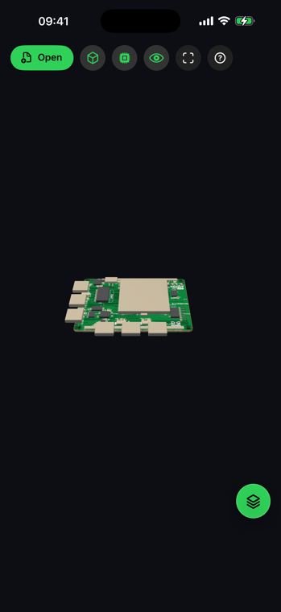
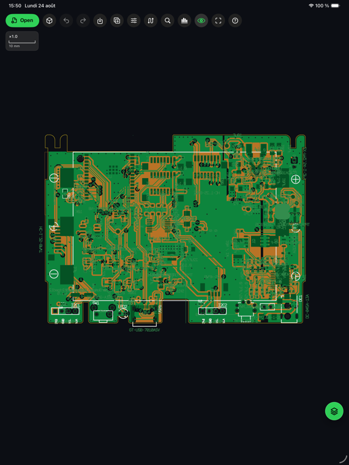

Local par conception
Vos fichiers PCB sont ouverts et traités sur votre appareil. AGBoard ne piste pas ses utilisateurs et ne vend aucune donnée personnelle.
Disponible sur l'App Store
Éditeur PCB pour iPhone et iPad
Ouvrez vos fichiers Gerber (X2/X3), Barco DPF, KiCad, Altium, Excellon, DXF, ODB++, IPC-2581, Eagle et Landrex BoardView, ainsi que vos placements de composants. Inspectez des cartes denses, mesurez les clearances, modifiez des formes, transformez des calques et exportez des rapports propres, directement depuis iOS.
Disponible dès maintenant sur iPhone et iPad. Versions Mac et Windows prévues pour février 2027.
Support : support@agboard-app.com
Partez de la tâche à accomplir, puis utilisez les données PCB qui la décrivent.
Ouvrez des cartes complètes depuis Fichiers ou iCloud Drive et gardez un contrôle précis des couches sur iPhone et iPad.
Tournez le profil réel, inspectez trous et cuivre, retournez l'assemblage et sélectionnez les composants disponibles.
Localisez références, boîtiers, pins, points de test et signaux nommés sans perdre leur contexte sur la carte.
Contrôlez les jeux entre pads, ajustez les géométries prises en charge et répétez toute la carte en panneau de production.
| Format | Extensions | Ce qui est lu |
|---|---|---|
| Gerber | .gbr .gtl .gbl .gto .gts .gko .gm1… | RS-274X, X2 et X3. Couches internes, macros, régions, step-and-repeat. Les attributs X2 donnent le rôle de chaque couche ; X3 ajoute les composants (référence, valeur, boîtier, type de montage, rotation) et les noms de nets. Les jeux photoplot Zuken sont reconnus par leur index .phl, chaque film .phd se plaçant du côté de la carte auquel il appartient ; les jeux Zuken CR-8000 par leur liste de films .fpl. Les fichiers aux extensions inhabituelles sont reconnus d'après leur contenu. Un jeu complet s'ouvre depuis un dossier ou un .zip. |
| Barco DPF (UCAM) | .dpf | Dynamic Process Format de Barco / Ucamco : couches PCB avec pastilles, pistes, arcs, contours, ouvertures complexes, blocs, polarités et nets lorsque présents. Les objets séparés du fichier restent sélectionnables individuellement. Export des modifications en Gerber .gbr ; pas de régénération du DPF modifié. |
| KiCad | .kicad_pcb .kicad_sch .kicad_pro .kicad_mod .kicad_sym .kicad_wks | La carte native KiCad, ouverte directement. Couches, pistes, arcs, vias, pastilles, zones de cuivre, sérigraphie, composants et nets. Les schémas aussi : symboles, fils, jonctions, étiquettes de net et feuilles hiérarchiques, les fils portant les mêmes noms de nets que la carte. Un projet ouvre la carte voisine ; une empreinte s'ouvre seule. Une bibliothèque de symboles s'ouvre comme une planche, un cartouche comme celui du projet. Cartes de KiCad 5 à la version actuelle ; schémas à partir de KiCad 6. |
| Altium Designer | .PcbDoc .PcbLib .CSPcbDoc | Carte et bibliothèque d'empreintes ouvertes directement : pistes, arcs, pastilles, vias, plans de cuivre, cotes, sérigraphie, contour, composants et nets, y compris la sérigraphie Unicode. Les cartes Circuit Studio s'ouvrent de la même façon. |
| Perçage Excellon | .drl .exc .nc .xln .tap .xnc… | Trous métallisés et non métallisés, rainures, arcs et motifs répétés, avec la table des perçages dans les statistiques. Les .DRL binaires historiques et les fichiers de vias borgnes .TX1 d'Altium, le nc_param.txt d'Allegro et les perçages Zuken CR-8000 sont lus aussi. |
| ODB++ | dossier · .zip .7z .tgz .tar .odb… | Job multi-couches complet ; les archives sont extraites automatiquement, les panneaux dépliés, nets et composants inclus. |
| IPC-2581 | .cvg .xml | Couches, pastilles, pistes, nets et composants dans un seul fichier. |
| AutoCAD DXF | .dxf | Dessins ASCII ou binaires : calques, lignes, arcs, cercles, polylignes, ellipses, splines, blocs, textes et hachures. |
| Eagle / Fusion | .brd | Carte Eagle (XML) : pistes, pastilles, vias, contour, sérigraphie, texte. |
| Landrex BoardView | .brd .brd2 | Données d'inspection : contour, enveloppes de composants, pins, points de test et nets nommés. |
| Job Gerber | .gbrjob | Ouvre tout le jeu de Gerber référencé en une fois, chaque couche avec son rôle exact. |
| Netlist IPC-D-356 | .ipc .356 .d356 | Liste des équipotentielles : active la recherche et le surlignage de nets. |
| Placement composants | .csv .txt .pos .xy… | Fichiers pick-and-place, avec profils d'analyse réutilisables pour les colonnes. |
| Projet AGBoard | .agproj | Les calques et leurs réglages, tels qu'enregistrés par Export project, rouverts à l'identique. |
Non lus : schémas Altium (.SchDoc), schémas KiCad 5 et Eagle (.sch), bases Cadence Allegro (.brd), archives RAR et protégées par mot de passe. Pour une carte, exportez des Gerber, de l'ODB++ ou de l'IPC-2581 depuis l'outil de conception ; un schéma KiCad 5 s'ouvre une fois enregistré par KiCad 6 ou plus récent.
Tout est analysé sur votre appareil — aucun envoi, aucun compte.
AGBoard sur iPhone et iPad. Les cartes montrées sont des designs publics open-source.



Vos fichiers PCB sont ouverts et traités sur votre appareil. AGBoard ne piste pas ses utilisateurs et ne vend aucune donnée personnelle.
Zoom par pincement, déplacement, filtres de calques, couleurs réalistes, grille et aimantation : inspectez vos cartes partout.
Images PNG HD, PDF vectoriels multi-pages (une page par calque), rapports CSV des calques, DRC léger en CSV, impression AirPrint et fichiers projet partageables.
Sur iPhone comme sur iPad, ouvrez vos fichiers depuis Fichiers ou iCloud — un fichier seul ou une archive de fabrication complète, toutes les couches d'un coup. Sur iPad, vous pouvez aussi les glisser-déposer directement sur le canvas.
Zoomez jusqu'au plus petit pad, basculez les couches, mesurez distances et clearances, et trouvez n'importe quel composant ou net en quelques secondes.
Partagez des PNG HD, des PDF vectoriels multi-pages, des rapports CSV — ou un fichier projet que votre équipe rouvre tel quel.
Gerber RS-274X/X2/X3 (couches internes comprises), couches Barco / Ucamco DPF (.dpf), cartes et bibliothèques d'empreintes KiCad et Altium (Circuit Studio compris), perçages Excellon, dessins AutoCAD DXF (ASCII ou binaires), jobs ODB++ avec panneaux dépliés, designs IPC-2581, cartes Eagle et Landrex BoardView .brd, fichiers job Gerber (.gbrjob), netlists IPC-D-356 et placements composants CSV/TXT/POS.
Oui, avec AGBoard Pro. L'app Fichiers affiche alors une image de la carte comme vignette de chaque fichier Gerber, de perçage, KiCad, Altium, Eagle, DXF ou IPC-2581, et un aperçu PDF couche par couche quand vous le touchez. Les deux sont dessinés sur votre appareil. Ouvrez l'app une fois après vous être abonné.
Oui. Chaque fichier est analysé et affiché sur votre appareil ; rien n'est envoyé sur internet, aucun compte AGBoard n'est requis et l'app ne contient aucun pistage.
AGBoard est gratuite à télécharger et permet d'ouvrir cinq fichiers sans frais. Après ces cinq ouvertures, un abonnement AGBoard Pro mensuel ou annuel à renouvellement automatique est nécessaire pour continuer à utiliser l'app. L'abonnement se renouvelle automatiquement jusqu'à sa résiliation dans les réglages de votre compte Apple.
iPhone et iPad sous iOS 17 ou plus récent. Le rendu est accéléré par Metal ; les performances dépendent néanmoins de l'appareil ainsi que de la taille et de la complexité de la carte.
Oui — les versions Mac et Windows sont prévues pour février 2027.